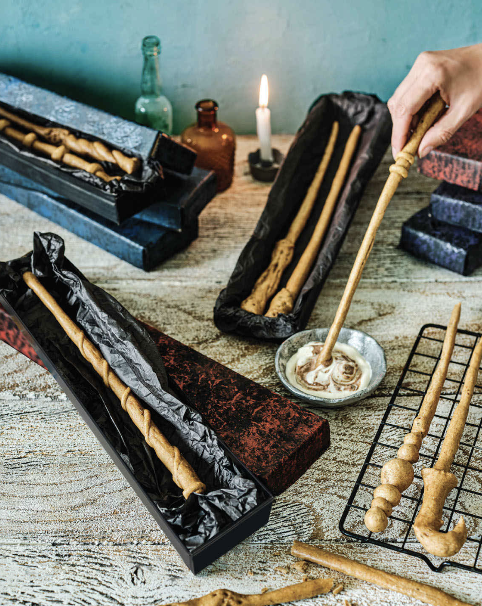
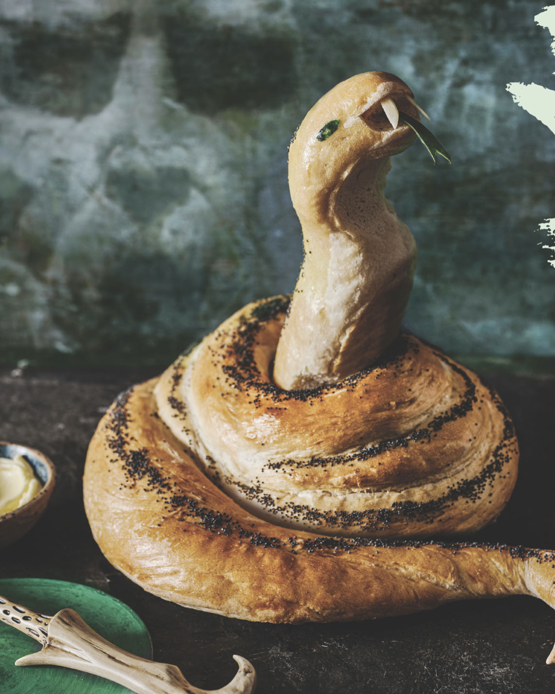

Harry Potter-Inspired Snacks

Wand Breadsticks
Ingredients
For the wands:
- Whole wheat bread flour (155 grams)
- Active dry yeast (1/4 teaspoon)
- Dried mixed herbs (1 teaspoon)
- Olive oil (1 tablespoon)
- Salt (1/2 teaspoon)
- Almond or oat milk, for brushing
For the dip:
- Dairy-free yoghurt (120 grams)
- Vegan mayonnaise (120 grams)
- Vegan black olive tapenade (2 tablespoons)
- Alternatively: pesto, tomato salsa, or vegan cheese
Process:
- Put the flour, yeast, herbs, oil and salt in a bowl. Add 90 ml of warm
water and mix well with a round-bladed knife, until the mixture comes
together to form a dough. Add a little more water if the dough is dry and
crumbly. Turn out onto a lightly floured surface and knead for 10 minutes,
until the dough is completely smooth and elastic. Place in a lightly floured
bowl, cover with plastic wrap, and leave in a warm place for 30 minutes.
- Preheat the oven to 220°C/gas mark 7. Line a large baking sheet
with baking parchment. Turn the dough out onto a lightly floured surface
and cut into eight even-sized pieces. Roll each under the palms of your
hands to shape wands, making them thicker at the 'handle" end and
tapering to a point at the other. The dough will expand as it bakes, so
roll the wands very thin. Each should be about 30 cms long.
- Brush the wand breadsticks lightly with almond or oat milk, and
bake for 8-10 minutes.
- While baking, beat together the yogurt and mayonnaise. Transfer all
but a tablespoonful into a serving bowl. Stir the tapenade into this and
swirl into the yogurt mayonnaise. Serve with the wands.
Video:
Luna Lovegood's Spectrespecs Cookies
Ingredients:
For the cookies:
- All-purpose flour (290 g)
- Unsalted butter, firm (200 g)
- Confectioners'(or icing) sugar (100 g)
- 2 large egg yolks
- Vanilla extract (2 teaspoons)
- Hard candies or boiled sweets (12 pink, 12 blue)
For the frosting:
- 1 medium egg, white
- Confectioners'(or icing) sugar (190 g)
- Pink food dye
- Edible pink glitter
Process:
- Put the flour in a food processor and dice in the butter. Blend until the
mixture resembles fine bread crumbs. Add the sugar, and blend briefly
to mix. Add the egg yolks and vanila and blend to a smooth dough.
Wrap in plastic wrap and chill for about an hour, until firm.
- Preheat the oven to 190°C/gas mark 5. Line two baking sheets
with baking parchment. Use paper to trace and cut out the template (The Official Harry Potter Baking Book, p. 117). Roll out half the dough on
a lightly floured surface to 3mm thickness, reserving the remaining dough in the fridge. Slide onto one baking sheet.
- Place the template over the pastry and cut out the specs shape
using a small kitchen knife, not forgetting to cut out the center circles.
Cut out as many more shapes as you can fit on the dough. Carefully lift
away the dough trimmings and chil these. Roll out and cut shapes from
the reserved dough and trimmings, until you have 12 pairs of specs.
- Bake the cookies for 5 minutes. Unwrap the candies and place one
of each color in each pair of specs. Return to the oven for 5 minutes,
or until they've melted to fill the space. If there are any areas where
the candies have not completely flooded the space, use a toothpick
to push the hot syrup to the edges. Leave to cool completely.
- Using a whisk, beat together the egg white and confectioners' sugar in
a bowl, adding a dash of pink food dye. The mixture should thickly coat
the back of a spoon. If too thick, beat in a drop of water. Use a fine brush
to spread the frosting over the specs. Leave for a couple of hours, or
overnight to set. Serve sprinkled with edible glitter.
Video:

Salazar Slytherin's Sourdough Snake
Special Equipment
- Cardboard tubes 12.5cm and 5cm diameter
- Fine paintbrush
- Serrated knife
Ingredients
For the dough:
- White bread flour (655 g)
- Active dry yeast (1 teaspoon)
- Salt (2 teaspoons)
To finish:
- 1 large egg, beaten, to glaze
- Poppy seeds (1 tablespoon)
- 2 flaked almonds
- Small piece of cucumber skin
- Green food dye
- Optional: cream cheese
Process:
- To make the sourdough starter, put 2 cups/250 g of
the flour in a large bowl with the yeast. Add 1 cup/250 ml
lukewarm water and mix well to make a thick, sticky
batter. Cover the bowl with a dampened towel and
leave to stand at room temperature for 24 hours. The
batter will rise, and bubbles will form on the surface.
- The next day, stir in the remaining flour, the salt, and
an additional 150 ml of lukewarm water. Mix well
to make a soft but not sticky dough. If the mixture is dry
and crumbly, add a dash more water. Turn the dough out
onto a floured surface and knead for 10 minutes, until
smooth and elastic. Transfer to a lightly oiled bowl,
cover with plastic wrap, and leave to rise in a warm
place until the dough has doubled in size, about 2 hours.
- Line two baking sheets with baking parchment. Cut a
12.5 cm and a 5 cm length of cardboard tube
and wrap both in foil. Punch the dough to deflate it, and
turn out onto a floured surface. Reserve 2/5 of
the dough. Roll out the remainder under the palms of
your hands until very long, about 102 cm, and
tapering to a fine point at one end for the tail.
- Position the larger wrapped tube upright in the center of one baking
sheet. Lift the dough onto the baking sheet and arrange the snake
shape, curling the tail end out toward one corner of the baking sheet
and loosely wrapping the rest of the dough around the foil tube, making
sure that the end of the dough finishes behind the tube. Halve the reserved
dough.
- Roll out one piece until about 30 cm long, and wrap around
the tube with the ends again meeting behind the tube. Squash the
smaller tube slightly to flatten it, and position on the second baking sheet.
- Roll out the remaining dough until 20 cm long and position
on the baking sheet, with one end of the dough resting on the foil tube
to create the curved head. Leave i n a warm place covered loosely
with oled plastic wrap for 45 minutes, until risen. Preheat the oven to
220°C/gas mark 7.
- Brush the dough with the beaten egg and sprinkle with poppy seeds Bake
for 20 minutes. Remove the head section from the oven and twist out the
foil tube from the body. Return to the oven for 10 minutes. Leave to cool.
- To assemble, carefully use a sharp knife, preferably serrated, to cut a small wedge shape from the top of
the head to shape the mouth. Push the head piece down into the cavity
in the center of the body. Shape and position two pointed fangs from
the almonds, and a long forked tongue from the cucumber skin. Finish by painting eyes using green food dye.
Video: